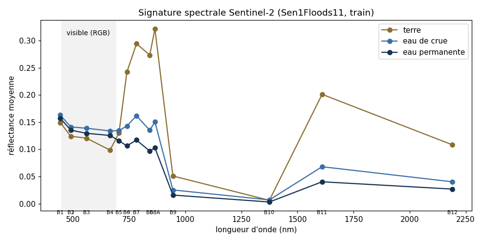
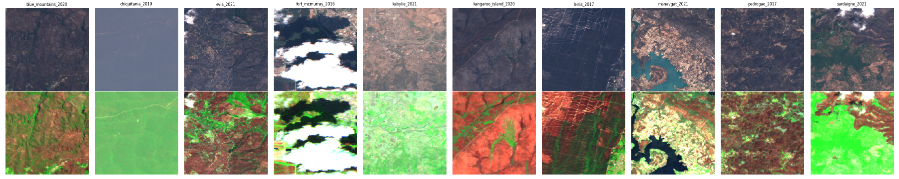
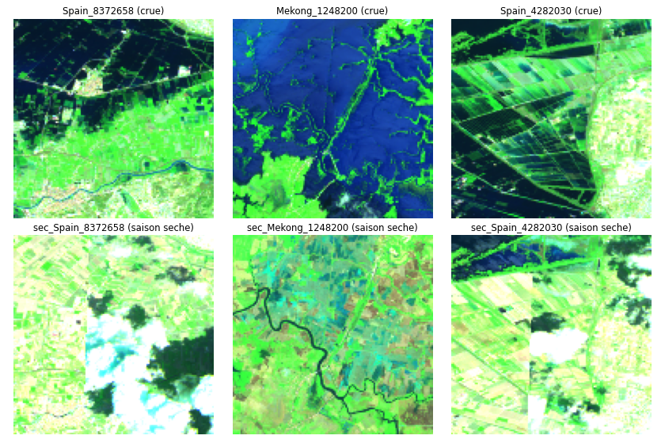

TUILE 512 × 512 PX · 10 M / PX
DÉCISION À BORD · 1 PASSE
One Look
Une image, un regard, une décision : détecter les inondations et les feux de forêt directement à bord du satellite, sans fausses alertes.
Les satellites voient tout. Ils ne peuvent pas tout envoyer.
Trop d'images
Le volume explose ; la liaison vers le sol est courte et coûteuse.
Trop lent
Tout analyser au sol retarde l'alerte de plusieurs heures.
Décider à bord
Une petite IA trie : n'envoyer en priorité que ce qui compte.
Tout se joue en orbite, en une seule passe.
Capteur
Optique (13 bandes) ou radar, selon le satellite.
Contrôles
Format, bandes, valeurs : sinon INCONNU sans appeler l'IA.
Modèle
0,2 Mo, 5 ms par tuile sur un seul cœur CPU.
Décision
Alerte envoyée en priorité ; normal gardé ; inconnu vers un humain.
Un ordinateur en CPU seul joue ici l'ordinateur de bord : la taille et la vitesse font partie des critères.
Plus de 1 300 tuiles, rassemblées une à une.
Toutes ramenées au même format : 512 × 512 px, 10 m, radar en dB, 13 bandes optiques. Provenance, licences et biais dans le carnet de données.
Tester sur des pays jamais vus.
Apprentissage
USA · Inde · Paraguay · Ghana · Nigeria · Pakistan · Californie (feux)
Réglage
Espagne · Mékong · Portugal (feux) · un pli de la Californie
Test final
Bolivie · Sri Lanka · Somalie · Grèce · Sardaigne · Australie
- Le découpage officiel tirait les tuiles au hasard dans chaque pays : des voisines en apprentissage et en test, des scores gonflés.
- Ici, aucun pays dans deux ensembles ; le test n'est utilisé qu'une fois, à la fin.
L'eau se cache hors du visible.
| Caractéristique | Sépare eau / terre |
|---|---|
| Indice MNDWI (vert + SWIR) | 0,98 |
| Proche infrarouge (B8) | 0,94 |
| Radar VH | 0,89 |
| Meilleure bande RGB (rouge) | 0,69 |
AUC sur 444 000 pixels annotés · 0,5 = hasard · 1 = parfait

Que perd-on avec une simple caméra couleur ?

Haut : couleurs naturelles (RGB). Bas : infrarouge (SWIR). Le brûlé, discret en RGB, ressort en brun-rouge. Quatre de ces dix scènes ont été écartées après vérification visuelle.
Tout ce qui est sombre n'est pas une crue.
- Ombres de nuages
- Rivières, rizières, bassins salants
- Champs labourés (noirs au radar)
- Petites rivières oubliées par la carte d'eau permanente
Une règle simple par pixel : 100 % de fausses alertes en RGB, 38 % avec l'infrarouge.

Même données, même test, entrées différentes.
| Modèle | Entrée | F1 | Fausses alertes | Taille |
|---|---|---|---|---|
| Petit CNN | RGB | 0,31 | 12 % | 0,2 Mo |
| MobileNetV3 pré-entraîné | RGB | 0,46 | 20 % | 6,1 Mo |
| YOLOv8n (rectangles) | RGB | 0,54 | 29 % | 12,6 Mo |
| CLIP, sans entraînement | RGB | 0,48 | 51 % | 605 Mo |
| Petit CNN | 13 bandes + radar | 0,61 | 5 % | 0,2 Mo |
Test : 35 inondations, 4 feux, 41 tuiles normales, pays jamais vus. Taille : modèle INT8 quand il existe.
Petit, rapide, et il ne crie pas au loup.
Le prix : 60 % des inondations trouvées. Un seuil d'alerte réglé sur la validation fait passer les fausses alertes de 56 % à 5 %. Choix assumé : une fausse alerte coûte cher.
Sans infrarouge, l'IA devine plus qu'elle ne voit.
RGB seul
Même petit CNN : F1 0,31, 17 % des inondations trouvées.
Le pré-entraînement (MobileNet : 0,46) et surtout la forme (YOLO : 0,54) aident, sans combler l'écart.
Image complète
F1 0,61, précision 95 %, 5 % de fausses alertes.
Optique seule (radar masqué) : précision 100 %, 37 % des crues trouvées.
Même taille, même vitesse : les bandes infrarouges ne coûtent rien à bord et changent tout.
Savoir dire « je ne sais pas ».
Score « énergie »
AUROC : pire que le hasard. Le bruit aléatoire rend le modèle très sûr de lui.
Distance de Mahalanobis
AUROC. Lave, glacier, mine, salar, images bruitées ou absurdes : 100 % signalés ; 88 % des images connues gardées.
Distance entre la « signature » interne de l'image et celle des classes apprises ; seuil fixé sur la validation.
Compresser sans rien perdre… ou pas.
| Modèle | Version | Taille | ms / tuile | F1 test |
|---|---|---|---|---|
| Petit CNN complet | 32 bits | 0,76 Mo | 7,9 | 0,51 |
| Petit CNN complet | INT8 | 0,21 Mo | 4,8 | 0,52 |
| MobileNetV3 RGB | 32 bits | 6,1 Mo | 1,3 | 0,45 |
| MobileNetV3 RGB | INT8 | 1,9 Mo | 1,7 | 0,22 |
F1 sans seuil d'alerte, ONNX Runtime, un seul cœur CPU. La quantification INT8 divise la taille par 3 à 4 ; elle préserve le petit CNN mais dégrade fortement MobileNet.
Ce qui ne marche pas encore.
- Radar seul : le modèle n'ose plus alerter (aucune alerte avec le seuil).
- Inondations manquées (13 sur 35) : crues diffuses, surtout au Sri Lanka.
- Feux : seulement 4 en test, dont 3 manqués ; CaBuAr ne couvre que la Californie.
- Images Copernicus parfois assemblées sur deux dates.
- Étiquettes : « crue = eau − eau permanente » dépend d'une carte imparfaite.
- CaBuAr harmonisé (L2A → L1C) : correction simple, à valider.
Un modèle de 0,2 Mo qui alerte peu, mais juste.
- L'infrarouge est décisif : le RGB seul ne suffit pas pour l'eau.
- Le seuil d'alerte et la détection de l'inconnu rendent le système fiable.
- Suite : un modèle dédié au radar, plus de feux hors Californie, tester sur une vraie carte embarquée.
Code, données et rapport : github.com/elrich-byte/one-look